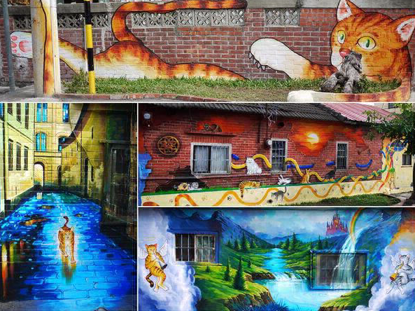
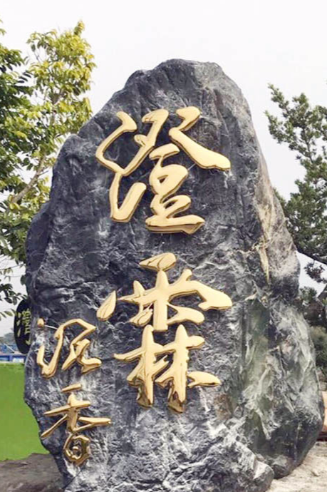
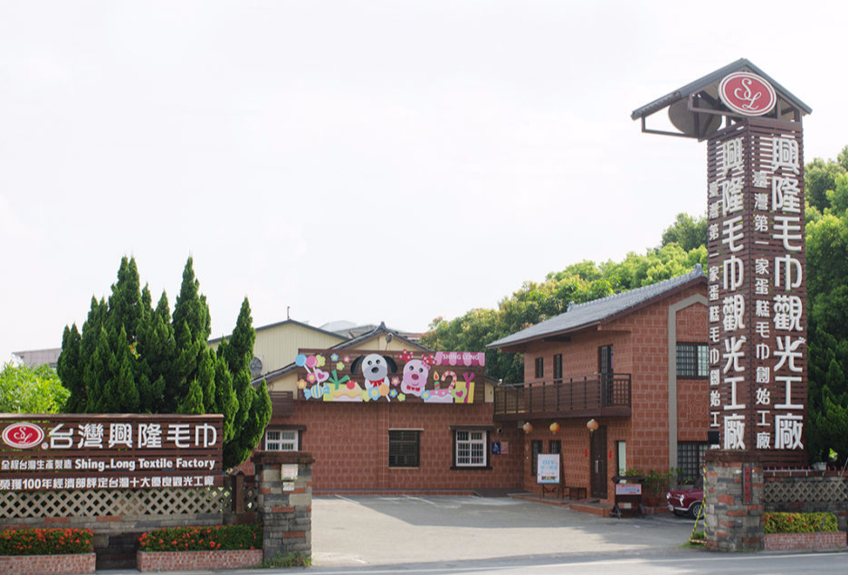

MOBIRISE
首頁
推薦景點
影片介紹
portfolio website templates

以貓咪為主題的彩繪社區
就在雲林頂溪社區生動上演
幾位年經人的衝勁及創意讓樸實的社區
頓時多了那幾分活力和色彩
雲林頂溪社區或許很多人很陌生
有可能這樣的活動可以讓更多人認識這純樸社區
交通方面就走中山高下虎尾交流道後
第二個紅綠燈(紅綠燈上有標誌)左轉就可以抵達!!
經過的是那鄉間小路所以別懷疑它就是這麼神秘
因為是社區所以假日時停車可能就比較困難!!
建議停在外圍較寬的道路就可以路邊停車了!!
千萬不要開進去到彩繪區不然可能就進退兩難
也會造成當地居民的困擾!
一進到社區就會看到這大隻的貓
舒適地躺在那迎接

澄霖沉香味道森林館位於雲林縣虎尾鎮佔地約5.8公頃，為國內第一座最大的沉香味道森林館園區有兼六園般日式禪風及生態景觀池的簡約風格，庭園中覆含八十多種樹種可觀賞。場館內有專業級導覽介紹及許多千年檜木藝術品以及澄霖獨家收藏世界上最大的阿里三千年神木和高達兩層樓的千年沉香木。
澄霖沉香味道森林館，兼具自然、環保、優質的沉香生態園，來體驗及認識這世界上最美麗的味道-沉香。與家人漫步在園區中，感受沉香的薰陶，享受天倫之樂。

興隆毛巾工廠」成立至今將近三十年頭，2002年台灣加入WTO世界自由貿易組織，大陸毛巾大量傾銷到台灣來，導致60-70年代曾經盛極一時的虎尾毛巾王國面臨巨大的衝擊。雖然大陸所製造的毛巾品質參差不齊，甚至黑心產品參雜於其中，但因為其低廉的價格正鯨吞蠶食著台灣毛巾業者的生存空間，因此「興隆毛巾工廠」開始思考轉型為「興隆毛巾觀光工廠」。轉型後的「興隆毛巾觀光工廠」有別於一般印象中灰暗老舊廠房，不但利用庭園造景，還設置許多木椅，讓廠房內增添幾許鄉村悠閒風格。一方面除了開放民眾參觀讓大家瞭解毛巾的製作過程，二方面還教導大家知道如何挑選好的毛巾，以及講解台灣製造的毛巾和大陸產的毛巾的差異性。三方面產品也走精緻路線，創造出各式各樣的蛋糕毛巾人見人愛，最後還可以促進當地的觀光產業發展，一舉數得。